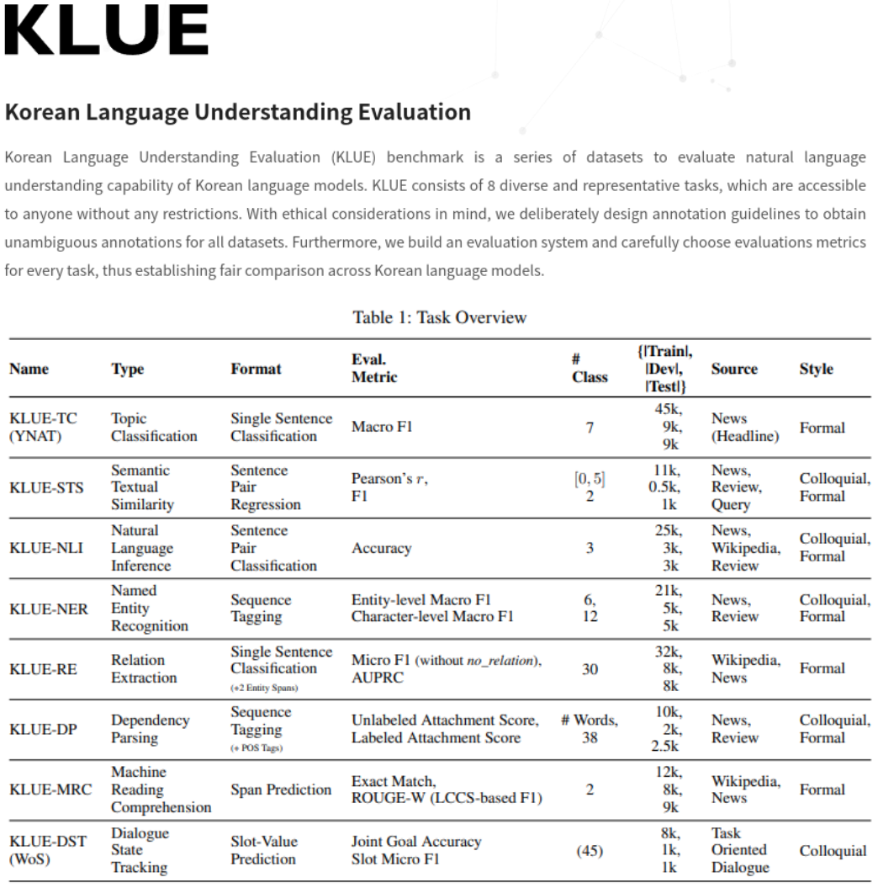

Seungwon Do
Research Engineer
Human Computer Interaction
Electronics and Telecommunications Research Institute (ETRI)
@Daejeon, Korea
About me
Research topics
Deep learning, reinforcement learning, computational interaction, computational user modeling, and mixed reality environments
Education
M.S. in Graduate School of Culture Technology
Advised by Prof. Byungjoo Lee
B.S. in Dept. of Electrical Engineering
Exchange Student in Dept. of Computer Science and Engineering
Work Experience
Research Engineer at the Intelligent Convergence Research Laboratory
Research Intern at the Ubiquitous Virtual Reality Lab
Intern at the digital marketing team
Publications
Donggyu Choi, Chang-eun Lee, Jaeuk Baek, Seungwon Do, Sungwoo Jun, Kwang-yong Kim, and Young-guk Ha
Machines 2023, 11(12), 1068
Paper
Heeseung Moon, Seungwon Do, Wonjae Kim, Minsuk Chang, Jiwon Seo, and Byungjoo Lee
2022 CHI Conference on Human Factors in Computing Systems (CHI’ 22)
Paper | Talk | Page | Data

KLUE: Korean Language Understanding Evaluation Sungjoon Park, Jihyung Moon, Sungdong Kim, Won Ik Cho, Jiyoon Han, Jangwon Park, Chisung Song, Junseong Kim, Yongsook Song, Taehwan Oh, Joohong Lee, Juhyun Oh, Sungwon Lyu, Younghoon Jeong, Inkwon Lee, Sangwoo Seo, Dongjun Lee, Hyunwoo Kim, Myeonghwa Lee, Seongbo Jang, Seungwon Do, Sunkyoung Kim, Kyungtae Lim, Jongwon Lee, Kyumin Park, Jamin Shin, Seonghyun Kim, Lucy Park, Alice Oh, Jungwoo Ha, and Kyunghyun Cho
Conference on Neural Information Processing Systems 2021 Datasets and Benchmarks Track (NeurIPS' 21)
Paper | Benchmark | Code
Seungwon Do, Minsuk Chang, and Byungjoo Lee
2021 CHI Conference on Human Factors in Computing Systems (CHI’ 21)
Paper | Talk | Code | Honorable Mention Award (Top 5%) | 26.3% Acceptance Rate

Seungwon Do and Byungjoo Lee
2020 CHI Conference on Human Factors in Computing Systems (CHI’ 20)
Paper | Talk | 24.3% Acceptance Rate

Seungwon Do, Hyungil Kim, and Woontack Woo
Korea Computer Congress 2018
Honors and Awards
SK Creative Challenge 2nd Prize | 2018
KAIST Invention Award 2nd Prize | 2018
Paper Contest of Korea Computer Congress 1st Prize | 2018
Graduation Exhibition in Dept. of Electrical Engineering 1st Prize | 2017
SAMSUNG Oh-Heon Kwon Scholarship | 2015-2016
National Excellence Scholarship (Natural Science and Engineering) | 2015-2016
POSTECH Jigok Scholarship | 2013-2014
Patent
• Domestic
Services
• Reviewing
CHI PLAY WIP | 2022 2020
• Seminar
Projects
• Projects

Software engineer for a hand interfaces model | 2023
#ComputerVision #SupervisedLearning
Reference Paper
3D Objects Visualization Tool
Software engineer for a 3d visualization tool | 2022
#OpenGL #GUI
Two Thumbs Typing Simulation
Software engineer for a two thumbs typing simulation | 2021
#ComputationalUserModeling #ReinforcementLearning

Software engineer for a system displaying museum collection information
National Museum of Modern and Contemporary Art | 2019
#Unity
Video

Software engineer for a media art using a human voice
PlaceMak gallery | 2019
#Unity #MediaArt
Video

Software engineer for a path-guiding system in virtual reality
Korea Advanced Institute of Science and Technology | 2018
#Unity #HTCVive #VR

Software engineer for a guitar musical note indicator program
Pohang University of Science and Technology | 2017
#OpenGL #AR

UX designer for a drone control system using leap motion
Seoul National University | 2016
#Drone #LeapMotion
Yut-marble: Multiplayer Game for Korean Blue Marble
Project manager and software engineer for a customized blue marble game
Pohang University of Science and Technology | 2015
#QT #C++ #Game
• Work Projects
Funded by Korean Defense Acquisition Program Administration | 설명가능한 시공간 복합전장 상황인지 기술 개발
This project aims to develop a battlefield situation awareness system that analyzes battlefield information collected from a virtual battlefield simulator using artificial intelligence technologies. The system enhances battlefield analysis through multiple hypothesis generation, object interaction analysis, and scene graph generation.
Realtime Complex Battlefield Situation Awareness Technology | 2022-2026
Funded by Korean Defense Acquisition Program Administration | 실시간 복합 전장정보 상황인지 기술
This project aims to develop a battlefield situation awareness system that leverages Manned-Unmanned Teaming (MUM-T) systems to analyze battlefield information collected by UAVs using artificial intelligence technologies. The system enhances real-time situational awareness and prediction to support strategic decision-making through video image quality enhancement, object semantic segmentation, object recognition and reconstruction, scene graph generation, and knowledge analysis.
Control Technology for Collective Operation of Military Ultra-small Ground Robots | 2022-2027
Funded by Korean Defense Acquisition Program Administration | 초소형 군집로봇 상황/환경 인지 기술
This project aims to develop a battlefield situation awareness system utilizing swarm micro-robots to analyze battlefield information collected by the robots using artificial intelligence technologies. The system enhances real-time situational awareness and prediction to support strategic decision-making through cooperative object recognition, tracking and dynamic behavior inference, place recognition, and model optimization.
A Study on Realtime Multi-Layer Battle Situation Awareness in Time and Space for AI Military Staff | 2021-2022
Funded by ETRI | AI 군참모를 위한 시공간 다계층 전역 상황 인지 원천기술 연구
This project aims to develop a battlefield situation awareness system that analyzes unstructured battlefield information, including video and text data collected by combat assets, using artificial intelligence technologies. The system enhances battlefield analysis through GAN-based battlefield data generation, cooperative object recognition, automatic labeling, and scene graph generation.
Pol-Bot Development for Conversational Police Knowledge Services | 2020-2021
Funded by Korean National Police Agency | 대화형 치안 지식 서비스 폴봇 개발
This project aims to develop an interactive knowledge service system that analyzes voice and text data collected from police and public security services using artificial intelligence technologies. The system provides security-related information through natural language processing-based question-answering, speech recognition and conversion, and automated legal information retrieval.
Skills
Application Development Including VR and AR Unity
Data Analysis and Visualization Matlab and R
Handling Motion Capture Data Optitrack
Robotics ROS1 and ROS2
Curriculum Vitae
updated on Feb 13, 2025